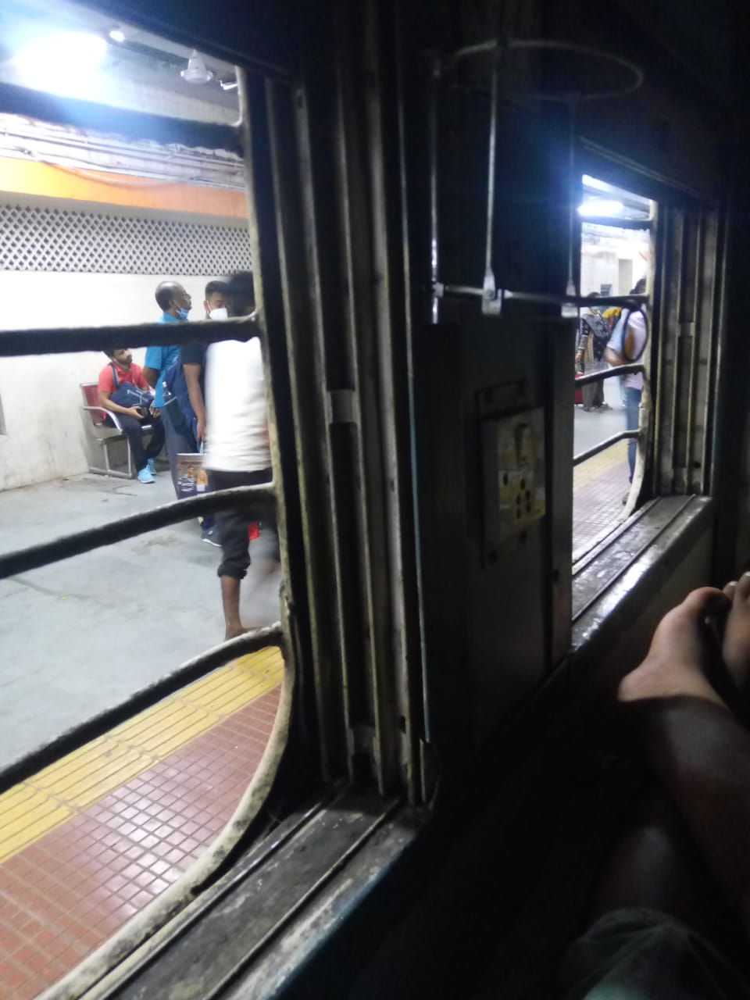
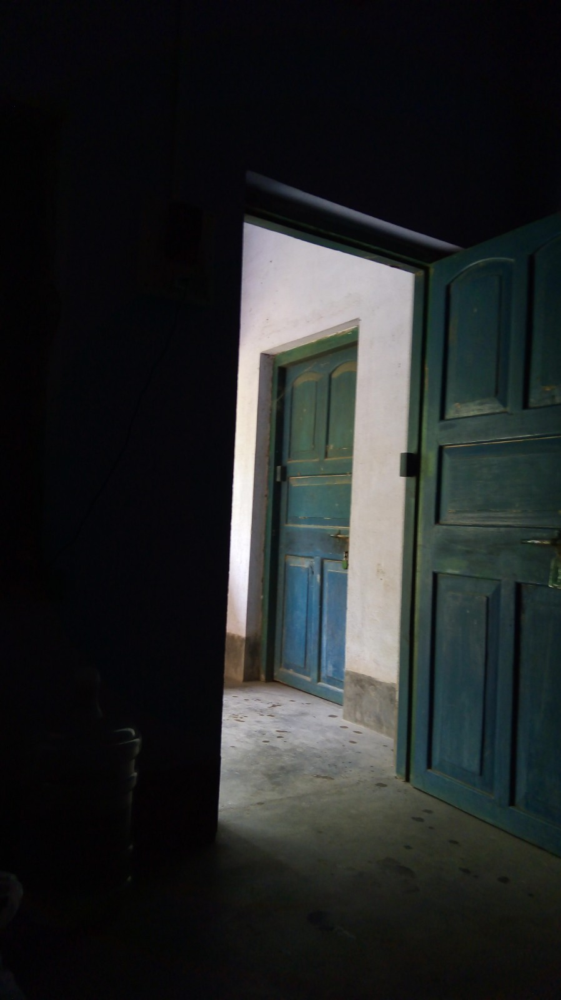
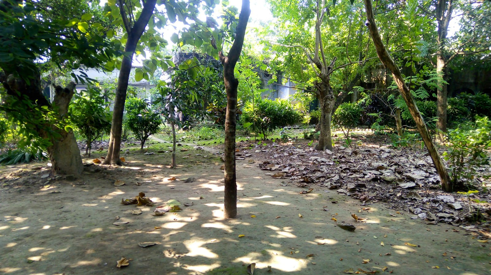
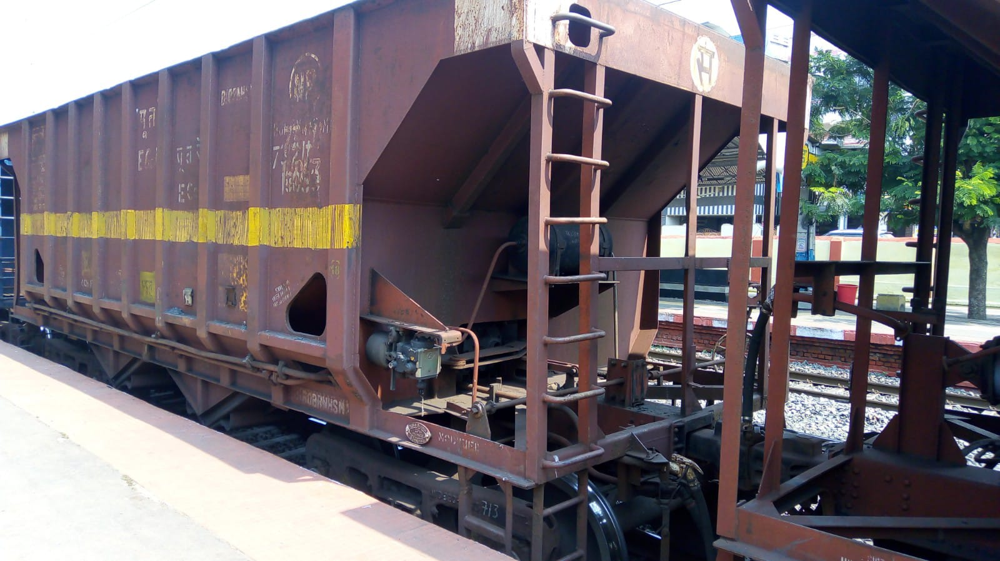

After almost 9 months, I was excited to go to Pakur in Jharkhand. My last trip was to my native village in the month of December. Getting bored was normal in this lockdown period. Although we go to many places in our city but I was eagerly waiting to go to somewhere else.. I mean going outside of Kolkata. My mother was also bored. One day my mother urged my father to take us to Pakur for a trip. My father also wanted to go to Pakur with family. So Papa booked our ticket in a fine night. Trip was on 8th October 2021 and we booked the ticket on somewhere 20 – 25 September. I was very much excited from that day.
As Durga Puja was coming we were also getting ready to fight with the crowd in the road 🤣🤣 I mean to say, on that day, Crowd would be at its highest level. On 8th October 2021 we went to the station by a taxi. But I was shocked by the fact that the crowd wasn’t there at all. We smoothly went to the station and reached there one hour early. Train’s name was gour express and it was from Sealdah to Malda. Now, as it was a night train, we had to sleep in the coach but there was another problem, we had RAC seats. After an hour of waiting without patience, Train started on right time. For an hour of half or one, I watched the scenery of outside. I know what are you thinking, ‘who would want to see black stuff without sleeping’ but, I am crazy to view outside scenery whether it is day or night.
As “not” expected, there was nothing black stuff. As you know October is Durga Puja time, that’s why I found the streets colourful. I was a little bit reluctant to see the scenery because I had to keep my eyes on when it is 3:30 AM. So at 11 PM, sadly giving up the scenery, I slept till the required time. Suddenly, at 3 AM my sleep broke. I saw the time and then thought ‘I know that if I sleep at this time I would probably not get up till 6 AM and now it is also a good time to view scenery (I don’t know why this idea came to my mind!). ’ So being a night owl, I saw the beautiful places (I know you would be thinking that what would I see in this darkness, but as I said, I enjoy the scenery whether it is day or night.) So after an hour of sleepless mid night, we stepped out of the train.
After some time, Raphael who works with my father, came and took us to the quarter. Midnight 4’o clock was a little bit scary. As I reached the quarter, I found out that it was a missionary school and college but because of Covid 19, it wasn’t running. My father came here to help the local people from various hand and leg disease with the workers. The room, when we reached, was a two floor building. Ground floor was a guest room and the top floor was of an Italian person who came here to help the local people. As we entered the room, the thing we got to know that there were many mosquitoes in the room. I was afraid because I am very much close to mosquitoes 😓. I slept 4: 30 AM and now you know, what would happen next…
Photo clicked on next morning
Yes, you guess right, I woke up almost 4 hours later i.e. at 8:30 AM. I did morning stuffs and ate food. Oh yes, food was like a five star hotel’s food (Not really! Because I have not been to 5 star hotel and don’t know about its food. Maybe it can beat five star hotel’s food also...) It was Chole and Puri. After eating with stomach full, I went to the bed and watched some videos. Then after an hour or two, my mother called me to walk on the grass as it is good to walk on the grass. But an evil devil came and I had to go to my room ( Ofcourse the mosquitoes, they are definitely the evil devil ). One of staff, later, called us to visit the whole missionary ( At that time, my father had also finished his work ). We roam in the missionary. It was covered with trees and plants and creepers and climbers. I was amazed to see those stuff. At lunch, we ate fish and rice. Next on 4’o clock in the evening, we decided to go to somewhere else. Read next to know about it…
View of the Quarter. You can view the trees and plants
The trip that we were planning was o.. of.. Dhani Pahad (I asked my mother) oh, it is Dharni Pahad. Staff of the office advised us to go there. But it was a great tough work turned out to be a boon for us. We get ready and picked our auto at 4 PM. It was 10 km far from the quarter. Pakur was a home to the production of Road Chips. I saw many trucks loaded with it. Getting there was a great deal of time. As we go farther, we got deeper into the hill. At a fine place, we had two roads and we don’t know where to go. Then Raphael Uncle asked one of local people living there. I was a little bit frightened because she was carrying a khurpi in her hand. He asked her in local language. Then Raphael Uncle said that the other way is the right way. As we reached in the valley, we had no choice of going with the auto. So we decided to go with foot. Half the way was good enough for me. I experienced the forest. Rock was a little bit of slippery. But another half way was a curse for me. I was sweating and also needed water. It was very much tough and I was reluctant to go to top.
We reached the top and gave a deep breath. I visited the temple and after spending some time we go to the valley. Going to the bottom wasn’t tough at all but it was more slippery.
We reached the quarter at late night at 9 PM (For us it is a late night.). Before going to the quarter, we went to Mr. Marandi’s house and then went to the staff’s house. Then after a while of talking we came home. We slept at night but my close friend, mosquitoes, would not leave me. At morning we decided to go to Pakur market. It was close to Railway station. We bought many things such as fruits, foods, cosmetics etc. Then returning to our quarter, we thought to sleep till the train comes. After a while after getting up, we went to the station, we say goodbye to locals and then after reaching the station we stepped in the train. I was sad but I also know ମୁଁ ଆସିବି (means, I will come). We reached Kolkata and then after that, we started our routine life.
Railway Station, Pakur,
Get to know the story of a great empire who stand out a vast empire. Click 'Maratha Empire' to know More
*Blog feature by Wordpress
After almost 9 months, I was excited to go to Pakur in Jharkhand. My last trip was to my native village in the month of December. Getting bored was normal in this lockdown period. Although we go to many places in our city but I was eagerly waiting to go to somewhere else.. I mean going outside of Kolkata. My mother was also bored. One day my mother urged my father to take us to Pakur for a trip. My father also wanted to go to Pakur with family. So Papa booked our ticket in a fine night. Trip was on 8th October 2021 and we booked the ticket on somewhere 20 – 25 September. I was very much excited from that day.
As Durga Puja was coming we were also getting ready to fight with the crowd in the road 🤣🤣 I mean to say, on that day, Crowd would be at its highest level. On 8th October 2021 we went to the station by a taxi. But I was shocked by the fact that the crowd wasn’t there at all. We smoothly went to the station and reached there one hour early. Train’s name was gour express and it was from Sealdah to Malda. Now, as it was a night train, we had to sleep in the coach but there was another problem, we had RAC seats. After an hour of waiting without patience, Train started on right time. For an hour of half or one, I watched the scenery of outside. I know what are you thinking, ‘who would want to see black stuff without sleeping’ but, I am crazy to view outside scenery whether it is day or night.
As “not” expected, there was nothing black stuff. As you know October is Durga Puja time, that’s why I found the streets colourful. I was a little bit reluctant to see the scenery because I had to keep my eyes on when it is 3:30 AM. So at 11 PM, sadly giving up the scenery, I slept till the required time. Suddenly, at 3 AM my sleep broke. I saw the time and then thought ‘I know that if I sleep at this time I would probably not getting up till 6 AM and now it is also a good time to view scenery (I don’t know why this idea came to my mind!). ’ So being a night owl, I saw the beautiful places (I know you would be thinking that what would I see in this darkness, but as I said, I enjoy the scenery whether it is day or night.) So after an hour of sleepless mid night, we stepped out of the train.
After some time, Raphael who works with my father, came and took us to the quarter. Midnight 4’o clock was a little bit scary. As I reached the quarter, I found out that it was a missionary school and college but because of Covid 19, it wasn’t running. My father came here to help the local people from various hand and leg disease with the workers. The room, when we reached, was a two floor building. Ground floor was a guest room and the top floor was of an Italian person who came here to help the local people. As we entered the room, the thing we got to know that there were many mosquitoes in the room. I was afraid cause I am very much close to mosquitoes 😓. I slept 4: 30 AM and now you know, what would happen next…
Photo clicked on next morning
Yes, you guess right, I woke up almost 4 hours later i.e. at 8:30 AM. I did morning stuffs and ate food. Oh yes, food was like a five star hotel’s food (Not really! Because I have not been to 5 star hotel and don’t know about its food. Maybe it can beat five star hotel’s food also...) It was Chole and Puri. After eating with stomach full, I went to the bed and watched some videos. Then after an hour or two, my mother called me to walk on the grass as it is good to walk on the grass. But an evil devil came and I had to go to my room ( Ofcourse the mosquitoes, they are definitely the evil devil ). One of staff, later, called us to visit the whole missionary ( At that time, my father had also finished his work ). We roam in the missionary. It was covered with trees and plants and creepers and climbers. I was amazed to see those stuff. At lunch, we ate fish and rice. Next on 4’o clock in the evening, we decided to go to somewhere else. Read next to know about it…
View of the Quarter. You can view the trees and plants
The trip that we were planning was o.. of.. Dhani Pahad (I asked my mother) oh, it is Dharni Pahad. Staff of the office advised us to go there. But it was a great tough work turned out to be a boon for us. We get ready and picked our auto at 4 PM. It was 10 km far from the quarter. Pakur was a home to the production of Road Chips. I saw many trucks loaded with it. Getting there was a great deal of time. As we go farther, we got deeper into the hill. At a fine place, we had two roads and we don’t know where to go. Then Raphael Uncle asked one of local people living there. I was a little bit frightened because she was carrying a khurpi in her hand. He asked her in local language. Then Raphael Uncle said that the other way is the right way. As we reached in the valley, we had no choice of going with the auto. So we decided to go with foot. Half the way was good enough for me. I experienced the forest. Rock was a little bit of slippery. But another half way was a curse for me. I was sweating and also needed water. It was very much tough and I was reluctant to go to top.
We reached the top and gave a deep breath. I visited the temple and after spending some time we go to the valley. Going to the bottom wasn’t tough at all but it was more slippery.
We reached the quarter at late night at 9 PM (For us it is a late night.). Before going to the quarter, we went to Mr. Marandi’s house and then went to the staff’s house. Then after a while of talking we came home. We slept at night but my close friend, mosquitoes, would not leave me. At morning we decided to go to Pakur market. It was close to Railway station. We bought many things such as fruits, foods, cosmetics etc. Then returning to our quarter, we thought to sleep till the train comes. After a while after getting up, we went to the station, we say goodbye to locals and then after reaching the station we stepped in the train. I was sad but I also know
Railway Station, Pakur,
Get to know the story of a great empire who stand out a vast empire. Click 'Maratha Empire' to know More
*Blog feature by Wordpress